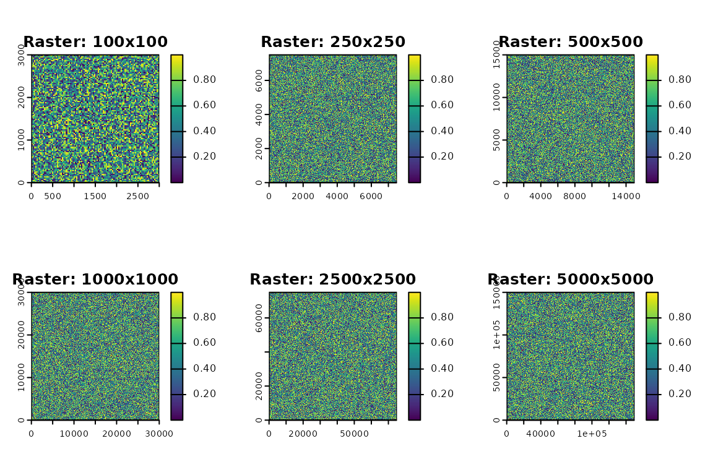
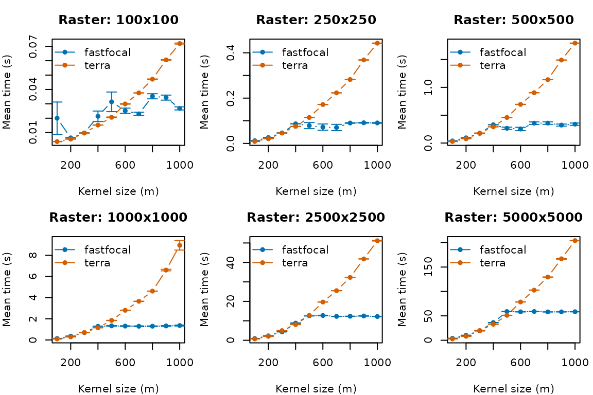
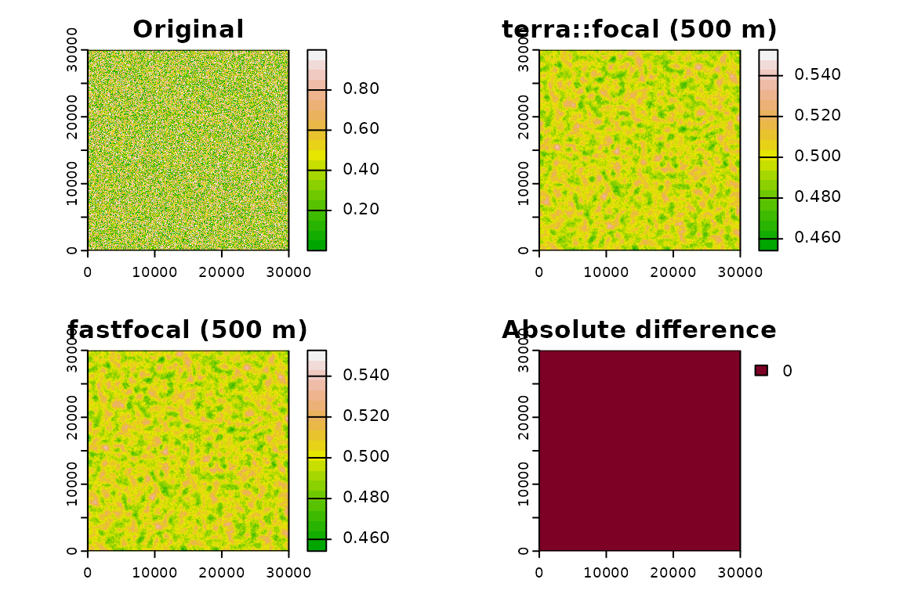

Is it faster?
We compare fastfocal() against
terra::focal() across a range of raster sizes and kernel
radii. To keep this vignette fast for CRAN, we load precomputed results
if available and provide optional code (disabled) to reproduce full
benchmarks locally.
Load libraries and parameters
library(fastfocal)
library(terra)
library(dplyr)
raster_sizes <- c(100, 250, 500, 1000, 2500, 5000)
kernel_sizes <- seq(100, 1000, 100)
replicates <- 1
res_m <- 30
crs_m <- "EPSG:3857"
set.seed(888)Create test rasters
Each raster is square with 30 m resolution.
rasters <- lapply(raster_sizes, function(size) {
ext_x <- size * res_m
ext_y <- size * res_m
r <- rast(nrows = size, ncols = size, extent = ext(0, ext_x, 0, ext_y), crs = crs_m)
values(r) <- runif(ncell(r))
r
})
names(rasters) <- as.character(raster_sizes)Quick peek
oldpar <- par(no.readonly = TRUE)
par(mfrow = c(2, 3), mar = c(2, 2, 3, 1))
raster_labels <- paste0(raster_sizes, "x", raster_sizes)
for (i in seq_along(rasters)) {
plot(rasters[[i]], main = paste("Raster:", raster_labels[i]))
}
par(oldpar)Optional full benchmark (disabled for speed)
Note: running the full grid below can take a while. It is disabled to keep CRAN checks fast. Uncomment to run locally.
grid <- expand.grid(
raster_size = raster_sizes,
d = kernel_sizes,
method = c("fastfocal", "terra"),
stringsAsFactors = FALSE
)
dir.create("benchmark_chunks", showWarnings = FALSE)
benchmark_row <- function(idx) {
size <- grid$raster_size[idx]
d <- grid$d[idx]
method <- grid$method[idx]
fname <- sprintf("benchmark_chunks/%s_%d_%dm.csv", method, size, d)
if (file.exists(fname)) return(NULL)
r <- rasters[[as.character(size)]]
times <- sapply(seq_len(replicates), function(i) {
t0 <- Sys.time()
if (method == "fastfocal") {
fastfocal(x = r, d = d, w = "circle", fun = "mean", engine = "auto", pad = "auto")
} else {
w <- focalMat(r, d, type = "circle")
if (all(w == 0)) return(NA_real_)
focal(r, w = w, fun = mean, na.rm = TRUE, na.policy = "omit")
}
as.numeric(difftime(Sys.time(), t0, units = "secs"))
})
chunk_df <- data.frame(method = method, raster_size = size, d = d, time = times)
write.csv(chunk_df, file = fname, row.names = FALSE)
}
invisible(sapply(seq_len(nrow(grid)), benchmark_row))
# After running, you can combine chunks into a single CSV under inst/extdata/benchmark.csvLoad precomputed results (with fallback)
bench_path <- system.file("extdata", "benchmark.csv", package = "fastfocal")
if (nzchar(bench_path) && file.exists(bench_path)) {
df <- read.csv(bench_path)
} else {
# Fallback tiny demo dataset for CRAN if extdata is not installed
df <- expand.grid(
method = c("fastfocal", "terra"),
raster_size = c(250, 500, 1000),
d = c(100, 300, 500),
KEEP.OUT.ATTRS = FALSE,
stringsAsFactors = FALSE
)
set.seed(1)
df$time <- ifelse(df$method == "fastfocal",
runif(nrow(df), 0.05, 0.20),
runif(nrow(df), 0.08, 0.35))
}
stopifnot(all(c("method","raster_size","d","time") %in% names(df)))Summarize and visualize
# --- summary ---
summary_df <- df %>%
group_by(method, raster_size, d) %>%
summarize(
mean_time = mean(time, na.rm = TRUE),
se_time = sd(time, na.rm = TRUE) / sqrt(sum(is.finite(time))),
.groups = "drop"
) %>%
mutate(raster_label = factor(
paste0(raster_size, "x", raster_size),
levels = paste0(sort(unique(df$raster_size)), "x", sort(unique(df$raster_size)))
))
oldpar <- par(no.readonly = TRUE)
layout(matrix(1:6, nrow = 2, byrow = TRUE))
par(mar = c(4, 4, 3, 1))
cols <- c("fastfocal" = "#0072B2", "terra" = "#D55E00")
raster_labels <- levels(summary_df$raster_label)
for (label in raster_labels) {
subdf <- subset(summary_df, raster_label == label)
if (nrow(subdf) == 0) next
plot(NA,
xlim = range(subdf$d),
ylim = range(subdf$mean_time + subdf$se_time, na.rm = TRUE),
xlab = "Kernel size (m)", ylab = "Mean time (s)",
main = paste("Raster:", label))
methods <- unique(subdf$method)
for (m in methods) {
data <- subdf[subdf$method == m, ]
lines(data$d, data$mean_time, col = cols[m], type = "b", pch = 16)
max_time <- max(subdf$mean_time, na.rm = TRUE)
min_se <- 0.001 * max_time
se <- ifelse(is.na(data$se_time), 0, data$se_time)
se_final <- pmax(se, min_se)
suppressWarnings(arrows(
x0 = data$d,
y0 = data$mean_time - se_final,
x1 = data$d,
y1 = data$mean_time + se_final,
angle = 90, code = 3, length = 0.05, col = cols[m]
))
}
legend("topleft", legend = methods, col = cols[methods], pch = 16, lty = 1, bty = "n")
}
Bonus: accuracy check
Compare a single case at moderate size.
test_r <- rasters[["1000"]]
kernel_d <- 500
# fastfocal
r_fast <- fastfocal(test_r, d = kernel_d, w = "circle", fun = "mean", engine = "auto", pad = "auto")
# terra::focal
w <- focalMat(test_r, kernel_d, type = "circle")
r_terra <- focal(test_r, w = w, fun = mean, na.rm = TRUE, na.policy = "omit")
# Differences
r_diff <- abs(r_fast - r_terra)
v_diff <- values(r_diff)
mean_diff <- mean(v_diff, na.rm = TRUE)
max_diff <- max(v_diff, na.rm = TRUE)
cat("Mean difference:", round(mean_diff, 6), "\n")
#> Mean difference: 0
cat("Max difference :", round(max_diff, 6), "\n")
#> Max difference : 0Visual comparison
oldpar <- par(no.readonly = TRUE)
par(mfrow = c(2, 2), mar = c(2, 2, 3, 2))
plot(test_r, main = "Original", col = terrain.colors(20))
plot(r_terra, main = "terra::focal (500 m)", col = terrain.colors(20))
plot(r_fast, main = "fastfocal (500 m)", col = terrain.colors(20))
plot(r_diff, main = "Absolute difference", col = hcl.colors(20, "YlOrRd", rev = TRUE))
par(oldpar)Session info
sessionInfo()
#> R version 4.5.1 (2025-06-13)
#> Platform: x86_64-pc-linux-gnu
#> Running under: Ubuntu 24.04.3 LTS
#>
#> Matrix products: default
#> BLAS: /usr/lib/x86_64-linux-gnu/openblas-pthread/libblas.so.3
#> LAPACK: /usr/lib/x86_64-linux-gnu/openblas-pthread/libopenblasp-r0.3.26.so; LAPACK version 3.12.0
#>
#> locale:
#> [1] LC_CTYPE=C.UTF-8 LC_NUMERIC=C LC_TIME=C.UTF-8
#> [4] LC_COLLATE=C.UTF-8 LC_MONETARY=C.UTF-8 LC_MESSAGES=C.UTF-8
#> [7] LC_PAPER=C.UTF-8 LC_NAME=C LC_ADDRESS=C
#> [10] LC_TELEPHONE=C LC_MEASUREMENT=C.UTF-8 LC_IDENTIFICATION=C
#>
#> time zone: UTC
#> tzcode source: system (glibc)
#>
#> attached base packages:
#> [1] stats graphics grDevices utils datasets methods base
#>
#> other attached packages:
#> [1] dplyr_1.1.4 terra_1.8-60 fastfocal_0.1.3
#>
#> loaded via a namespace (and not attached):
#> [1] vctrs_0.6.5 cli_3.6.5 knitr_1.50 rlang_1.1.6
#> [5] xfun_0.53 generics_0.1.4 textshaping_1.0.3 jsonlite_2.0.0
#> [9] glue_1.8.0 htmltools_0.5.8.1 ragg_1.5.0 sass_0.4.10
#> [13] rmarkdown_2.29 tibble_3.3.0 evaluate_1.0.5 jquerylib_0.1.4
#> [17] fastmap_1.2.0 yaml_2.3.10 lifecycle_1.0.4 compiler_4.5.1
#> [21] codetools_0.2-20 fs_1.6.6 pkgconfig_2.0.3 Rcpp_1.1.0
#> [25] systemfonts_1.2.3 digest_0.6.37 R6_2.6.1 tidyselect_1.2.1
#> [29] pillar_1.11.1 magrittr_2.0.4 bslib_0.9.0 tools_4.5.1
#> [33] pkgdown_2.1.3 cachem_1.1.0 desc_1.4.3Citation
To cite the package:
Wan, H. Y. (2025). fastfocal: Fast Multi-scale Raster Extraction and Moving Window Analysis with FFT. R package version 0.1.3. Zenodo. https://doi.org/10.5281/zenodo.17074691
citation("fastfocal")
#> To cite fastfocal in publications, please use:
#>
#> Wan HY (2025). _fastfocal: Fast Multi-scale Raster Extraction and
#> Moving Window Analysis with FFT_. doi:10.5281/zenodo.17074691
#> <https://doi.org/10.5281/zenodo.17074691>, R package version 0.1.3,
#> <https://hoyiwan.github.io/fastfocal/>.
#>
#> A BibTeX entry for LaTeX users is
#>
#> @Manual{,
#> title = {fastfocal: Fast Multi-scale Raster Extraction and Moving Window Analysis with FFT},
#> author = {Ho Yi Wan},
#> year = {2025},
#> note = {R package version 0.1.3},
#> doi = {10.5281/zenodo.17074691},
#> url = {https://hoyiwan.github.io/fastfocal/},
#> publisher = {Zenodo},
#> }